Clean Code First.
If readable, modular code can do it, we keep it simple. We avoid over-engineering and bloated frameworks.
TEHUB is a boutique software engineering agency — eight people on staff, two offices (Brooklyn and Berlin), and one core belief: write clean, testable, self-documenting code. We work in dedicated sprints to ensure we never compromise on quality, keeping the same technical lead on an account from start to finish.
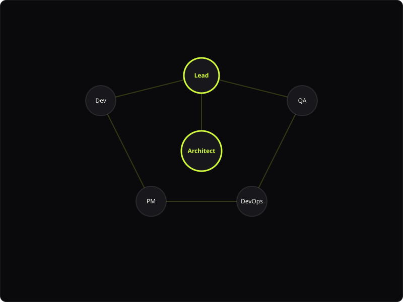
TEHUB started in October 2018 as a developer collective of three — Mira Halden, Joon Park, and Tomas Vance — sharing a small loft in Brooklyn that we borrowed for the autumn. We took on twelve custom software integration projects that first quarter and lost money on five of them due to scope estimation issues. We kept going because our custom integrations worked flawlessly where off-the-shelf tools crashed.
The first rule we ever wrote down: never ship code we would not sign off on. — Mira Halden, Founder & Chief Architect
The name "TEHUB" stands for Technology Hub. Our philosophy — careful database indexing, modular code, and an automation-first workflow — represents our commitment to modern software craftsmanship. We believe software should be built to run for years without requiring emergency maintenance.
Our agency is privately held; we have never taken outside venture capital, never sold a percentage to an advertising conglomerate, and we expect to remain owner-operated. We are eight engineers and product managers. We intend to stay small to maintain quality.
These are not aspirations — they are the architectural constraints that shape every codebase we deliver. We wrote these rules down in 2019 and enforce them on every project repository.
If readable, modular code can do it, we keep it simple. We avoid over-engineering and bloated frameworks.
From database indexing to serverless configurations, we design systems prepared to handle high concurrent user traffic.
The same technical lead runs your project from kickoff to production deployment. No telephone games or hand-offs.
Automated unit, integration, and end-to-end tests are written in parallel. Staging cannot merge without green tests.
We contribute back to the open source libraries we rely on and release helper packages to the developer community.
The first rule we ever wrote. We have delayed staging releases to fix coverage regressions, and we do not regret it.
Our New York hub is located in Brooklyn, a five-minute walk from the G train. High ceilings, dedicated developer pairing desks, test servers, and meeting spaces. We hold client strategy meetings here and run frontend design workshops.
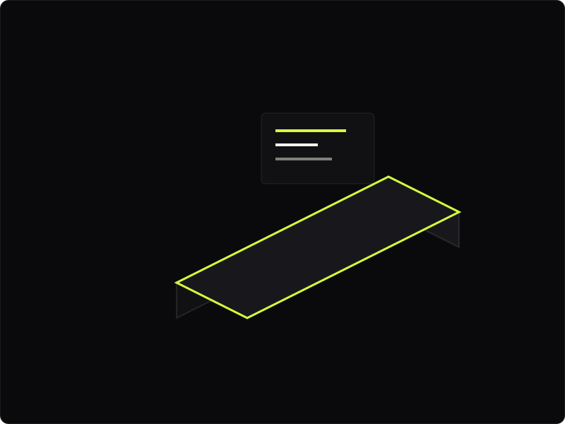
Greenpoint · NYCThe Berlin hub opened in 2020 — located in Mitte, focusing on database optimization, backend microservices, DevOps pipelines, and API automations. A quiet space designed for deep focusing on algorithmic engineering and systems scaling.
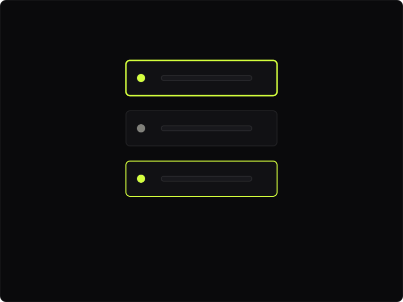
Mitte · BerlinThe product manager and the lead engineer assigned to your repository are the two primary contacts you will communicate with in Slack and Jira. The QA engineer and backend dev remain focused on code quality behind the scenes.
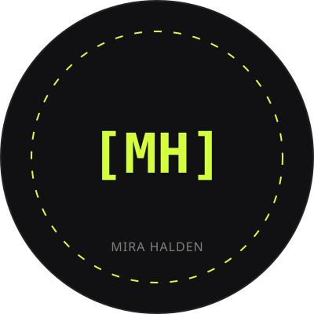
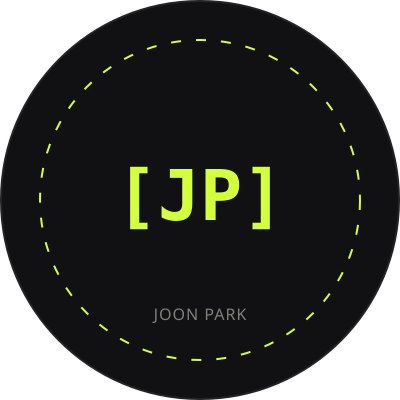
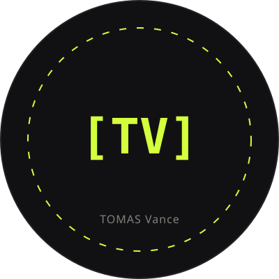
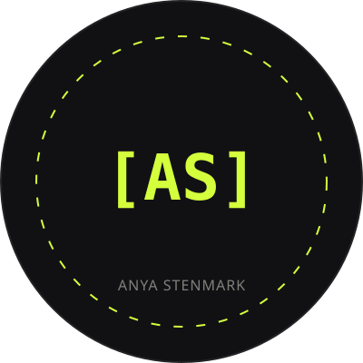
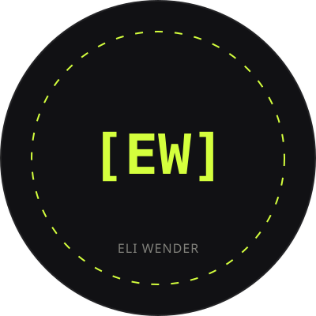
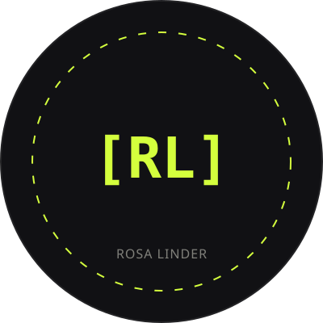
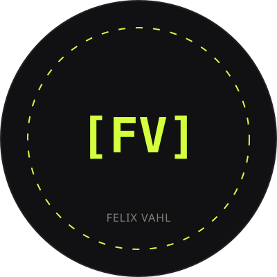
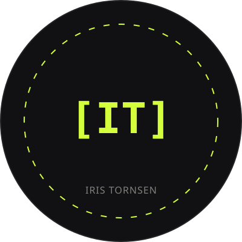
We are currently hiring a junior developer based in Berlin and a freelance cloud engineer for the New York squad. Project enquiries receive replies in 48 hours; job inquiries inside 7 days.